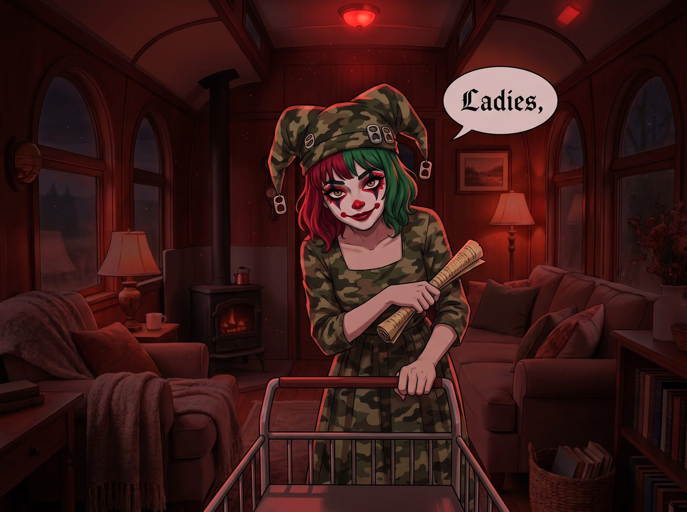
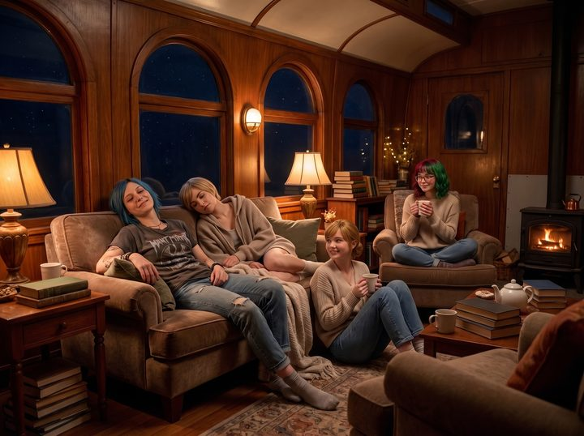

宮廷弄臣


連續幾晚被《瘟疫危機》和《Bang!》智商碾壓後，二號車廂的空氣裡開始凝聚一種名為「反Lily統一戰線」的暗流。
尤其是某個藍色短髮的警長，在連續擦了兩晚桌子、並在夢裡喊出「把實習生塞進燃油罐」之後，危險指數達到峰值。Max 拍立得的底片消耗量驟減，因為大家看 Lily 的眼神逐漸從崇拜演變成懷疑這貨其實是外星滲透的賽博容嬤嬤。
壓抑的氣場需要泄洪。在行政黑魔法的字典裡，怨念堆積等於系統維護成本上升。當宿主開始產生物理破壞的念頭——比如往熱牛奶裡加瀉藥、或者趁睡覺用螺絲起子拆 Lily 的鍵盤——就到了行政官僚必須化身為宮廷弄臣的時刻，用一場精心編排、合法且解壓的安全宣泄，把高壓鍋的氣安全放掉。
一、解壓矩陣：如何精準定位痛點
弄臣的最高境界，不是扮醜逗笑，而是讓權力者獲得宣泄控制權的幻覺，同時把矛頭精準引向無害的靶標。
Lily 在小黑屋——其實是她多螢幕機櫃後方的筆記本——裡建立了一張《四人心理代償與痛點映射模型》：
Chloe：表面訴求是自由、打破規則、暴力美學，核心痛點盲區是失去控制權（被當成NPC或打工仔使喚）。弄臣解法是主導權置換——把反抗對象轉移到某個無生命的公權力象徵上。
Victoria：表面訴求是奢華、優雅、精緻生活，核心痛點盲區是階級失格與審美降維（在荒野像流浪漢般狼狽）。弄臣解法是荒誕儀式感——用頂級規格去玩極度低端的事情。
Kate：表面訴求是救贖、被需要、道德安寧，核心痛點盲區是無力感與眼睜睜看著他人受苦。弄臣解法是微型奇蹟——製造一個因她而改變局面的微小正義。
Max：表面訴求是連結、記錄、見證真實，核心痛點盲區是旁觀者隔離（永遠在鏡頭後，無法真正參與風暴）。弄臣解法是強制置入局中——從記錄者變成亂局的關鍵推手。
二、限時合法解壓特區
星期五深夜。二號車廂的燈光突然全部熄滅，只剩下應急紅光。
戴著鈴鐺小丑帽——其實是軍用迷彩帽縫了幾個易拉罐拉環——的 Lily，推著一個金屬推車走了出來。她那張萬年不變的乖巧臉上，罕見地塗了一抹誇張的浮誇小丑彩妝，手裡拿著用舊文件捲成的指揮棒。
「女士們，」Lily 彎腰行了個誇張的宮廷禮，聲音甜美而嘶啞，「鑑於近期營地內部精神抗體水平下降，本行政官兼職宮廷弄臣，現向各位特許開放限時合法解壓特區，時長三小時。」
規則第一條：所有的破壞行為必須在合規容器內進行。
規則第二條：任何針對 Lily 本人的物理攻擊，將自動折算為當月燃油補貼扣除或強制加練試算表巨集，屬於最高級精神刑罰，故強烈建議轉移怒火。
三、Chloe的解法：對抗抽象巨獸
Lily 沒有讓 Chloe 去打砸車廂。她推出一臺老舊的、已經報廢的民用印表機，上面貼滿了當地鎮長的名字、稅務局的標誌，以及一張寫著「審計合規不予通過」的紙。
「Chloe 學姐，這台機具上週拒絕了我們的打印請求，導致您的維修報告延誤了零點三秒。」Lily 把一把重型鐵錘塞進 Chloe 手裡，「它是公權力的化身。請以一百二十磅的扭力，合法擊碎它。」
Chloe 先是一愣，接著血液直衝腦門——這不是破壞，這是對抗體制的正義執行！
「哐當！哐當！」伴隨著金屬碎裂的爽脆聲，Chloe 把印表機砸成了鐵餅，罵罵咧咧的鬱悶一掃而空：「爽！這破機器的字體本來就醜得像政客的嘴臉！」
Lily 在一旁默默拿平板記錄：「噪音分貝達標，認定為情緒疏導型拆解，計入心理健康維護支出。」
四、Victoria的解法：荒誕的極致奢華
名媛的痛點是身處泥濘。Lily 怎麼辦？她把營地外最泥濘的一個水坑鋪上了橙色的防潮布，並擺了一張法式宮廷真絲沙發。
「Victoria 學姐，您不是嫌棄生活降維嗎？」Lily 遞給她一杯真正的頂級年份紅酒——從應急箱深處私藏的盲盒裡摸出來的，「請穿著價值一萬美元的高定禮服，坐在泥潭中央的沙發上，用最優雅的姿態，把一箱過期的罐頭桃子，像餵給暴君一樣砸進泥水裡。」
Victoria 嫌棄地皺眉，但在酒精、戲劇張力和全場目光焦點的虛榮心驅動下，她提著裙擺走進去，優雅地端著高腳杯，一邊抿酒，一邊面無表情地把整箱桃子一顆顆精準砸進泥潭裡濺起泥花。
「粗俗……但莫名解壓。」Victoria 哼了一聲，發膠定型的金髮在雨夜裡閃閃發光。
五、Kate的解法：神聖的赦免宣判
老好人的痛點是無法拯救所有人。Lily 給她準備了一大堆防疫罰單複印件、以及紅色的查封警告貼紙。
「Kate 學姐，您不是覺得大家被官僚體系逼得很苦嗎？」Lily 遞給她一整桶紅色的水性油漆和巨型滾刷，「這裡是鎮政府郵寄的所有警告信副本。您可以合法地、大聲地宣讀它們的罪狀，然後用紅漆把它們刷成已被神聖慈悲赦免的廢紙。」
Kate 起初猶豫，但當她一刷子把那張威脅要罰款一萬美元的居家令刷成血紅的赦免時，那種奪回主導權的道德釋放感讓她眼眶微紅，聲音清亮地喊出了：「以愛之名，此罰無效！」
六、Max的解法：上帝視角的亂流製造者
旁觀者的解法是——加入混亂，成為導演。
Lily 把一架大功率無人機的操控手柄塞給 Max：「Max 學姐，您一直覺得自己在記錄別人的生活。現在，您是導演。用無人機把下面這場鬧劇拍成低俗B級片，並且……」Lily 湊到 Max 耳邊，「用喇叭喊一句聯邦探員開門檢查，看看下面那三個瘋女人會什麼反應。」
Max 的眼睛亮了。她深吸一口氣，推動搖桿，無人機俯衝，擴音器裡傳出冰冷的電子合成音：「聯邦調查局，妳們的拆解、砸桃子、刷漆不符合美學美育標準——」
下面的 Chloe 差點把鐵錘扔向天空，Victoria 嚇得差點把酒杯掉進泥潭。
七、弄臣的收網
三小時的狂歡結束。二號車廂一片狼藉：鐵皮碎片、紅漆、爛桃子泥、以及大口喘氣卻神情鬆弛的四個人。
Lily 拍了拍手，不知何時換回了那件乾淨的米色針織衫，推了推圓框眼鏡。她手裡端著托盤，上面整齊擺放著四杯溫熱的、加了少許薄荷與安神蜂蜜的真正純淨牛奶——裡面絕對沒有瀉藥，因為下瀉藥屬於低效的化學報復，會增加洗手間清理成本。
「宣泄結束。壓力釋放率百分之九十二。未觸發實體審計閾值。」Lily 把牛奶分發給四個人，語氣軟糯而乖巧：「各位學姐，今晚的娛樂費用已計入心理韌性建設特別預算，由合作項目的戰術心理戰科目代帳。至於明天……」
Lily 眨了眨眼：「我們需要開一場會，討論如何把今晚拍到的無人機B級片素材，剪輯成敵對勢力心理戰失敗案例，再申請一臺新印表機。」
Chloe 拿著牛奶杯，狠狠瞪了她一眼，最後噗嗤一聲笑出來，把頭偏向一邊：「你這裡哪裡是弄臣……你就是個開著合法剝削卡車的黑心大魔王。」
Max 按下最後一次快門。照片裡，三個精疲力竭卻滿血復活的人，和角落裡那個捧著牛奶杯笑得人畜無害的行政女孩，構成了2021年最荒誕也最結實的方舟日常。